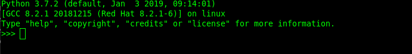

This course will walk you through the basic concepts of Python, OOP with Python, Project Structure, io and finish with a practical Python project to tie the course material together.
Python
Python is a clear and powerful object-oriented programming language, comparable to Perl, Ruby, Scheme, or Java.
Developed by Guido van Rossum
Windows
- Go to https://www.python.org/downloads/
- Download the latest version of Python (as of this course being written: Python 3.7.2)
- Run the installer
- enable PATH

- click [Install now]
Test that Python is properly installed by running
python --version
in a CMD/Powershell shell.
In case of errors reference the - Using Python on Windows page: link
Linux
Ubuntu
sudo apt-get update
sudo apt-get install python3.7
python3 --version
Mac
On macOS, the best way to install Python 3 is to use Homebrew. Not familiar with homebrew? link
brew install python3
There are several tools installed with the Python interpeter. Here are some of them:
python interpreter | The python interpreter. The executable that can be called directly from the commandline/terminal to start a new interactive python session (REPL) or to run python modules/files/packages |
pip | The Python package manager. The official Python package manager. Lets the user download and manage third-party packages hosted on the Python package index (PyPI) |
IDLE | IDLE is Python's Integrated Development and Learning Environment. Its a Python IDE for and by Python |
pydoc | The pydoc module automatically generates documentation from Python modules. |
Objects are Python's abstraction for data. All data in a Python program is represented by objects or by relations between objects. (In a sense, and in conformance to Von Neumann's model of a "stored program computer," code is also represented by objects.)
- Python is strongly typed and dynamically typed.
- Python is a general porpouse progragramming language. It is not the best choice for time critical or memory constrained tasks.
- Python is really a compiled programming language, but it acts as a interpred language.
- There exist different implementation of Python. The most common and the one we will use in this course will be CPython.
- Python comes with "Batteries included", meaning Python comes with a feature rich standard libary.
Python has two main versions. Python 2 and Python 3. Python 3 is the newest, but it has struggeled with adoption for some time. Python 3 has now turned a corner and has of 2018 taken the mantle of the main version from Python 2. Practicly this means that new Python packages and application will in most cases be written in Python 3.
Python 2 end of life is january 1 2020.

The Python community has a highly opiniated view of "good" Python code.
The Zen of Python are the philosophical principles of Python link
Beautiful is better than ugly.
Explicit is better than implicit.
Simple is better than complex.
Complex is better than complicated.
Flat is better than nested.
Sparse is better than dense.
Readability counts.
Special cases aren't special enough to break the rules.
Although practicality beats purity.
Errors should never pass silently.
Unless explicitly silenced.
In the face of ambiguity, refuse the temptation to guess.
There should be one-- and preferably only one --obvious way to do it.
Although that way may not be obvious at first unless you're Dutch.
Now is better than never.
Although never is often better than *right* now.
If the implementation is hard to explain, it's a bad idea.
If the implementation is easy to explain, it may be a good idea.
Namespaces are one honking great idea -- let's do more of those!
REPL
The Python can be runned interactivly through the commandline. Running bash python in the commandline start a RELP (Read Evaluate Print Loop ) instance.
Example

Example of basic arithmetic in the REPL
Exit REPL
Windows: Ctrl + Z + Enter
Mac/Linux: Ctrl + D
Python Standard Library
The Python Standard Library is large. Python follows a philosophy of; "Batteries included". Python is ready to go out of the box with modules to do a vast array of tasks.
import module_name
from module_name import function_name
import module_name as alias
from module_name import function_name as alias
Example with the math module
import math # import only the module
result = math.factorial(2)
from math import factorial # import the factorial function from the math module
result = factorial(2)
The free function help() will provide description of provided module
help(module_name)
The Python interpreter has a number of functions and types built into it that are always available.
The full list of Python 3 built-in functions can be found here: link
Important Built-in Functions
len() # Return the length (the number of items) of an object.
input() # The function then reads a line from input, converts it to a string
print() # Prints to stdout
bool() # returns True or False
help() # Invoke the built-in help system. (This function is intended for interactive use(REPL).)
Scalar types and values
- integers [5]
- floats [23.2]
- NoneType [None]
- bool [True/False]
int
unlimited precision signed integer
my_int = 1
my_new_int = int(22.22)
from_str_int = int("456")
float
my_float = 323.12
my_next_float = 3e8
my_third_float = 1.7e-35
None
None is the only value of the NoneType. It is most often used to represent the absence of a value.
nothing = None
bool
sant = True
usant = False
bool(sant) # returns True
bool(1) # returns True
bool(0) # returns False
Different Types in Python have different "truthy" and "falsy" values
bool([]) # returns False, empty list is falsy
bool([1,2,10]) # returns True, not-empty list is truthy
The control structure statements in python use colon ( : ) to indicate termination of the statement.
After a colon ( : ) in a statement the body of the construct should follow. In Python this block should be indented.
By convention this indentation level is 4 spaces.
; at the end of statements are not needed.
if var1 == var2:
dosomething() # Note 4 space indentation
if var1 == var2:
dosomething() # Indentation ERROR
Every new indentation level defines a new block
if var1 == var2:
dosomething()
if var1 is True:
dosomethingmore()
Indentation levels in Python code matches the structure of the program.
Significant whitespace Pros
- Forces the writer to write readable code
- Less clutter
- Human and Computer stays in sync
Whitespace rules
- Prefer four spaces
- Never mix spaces and tabs
- Be consistent on consecutive lines
- Only deviate to improve readability
Python has a large and very opinionated community. Writing Python code that follows the community standards is recognised as writing pythonic code.
Development of the Python language is managed through PEPs (Python Enhancement Proposals)
Notable PEPs
Accessing Zen of Python within Python itself
import this
Template
if expr:
print("expr is True")
Example
if True:
print("true!") # will be printed
if False:
print("false") # will not be printed
Python will implicitly convert expresions to a bool value. Both of the print() statements in the block under will execute
if bool("yay"):
print("yoo")
if "yay":
print("yoo")
If Else
if 30 < 10:
print("30 is smaller than 10")
else:
print("30 is bigger than 10")
Template
while expr:
print("looping while expr is true")
Example
Print and decrement
abc = 10
while abc != 0:
print(abc)
abc -= 1
Infinite loop
abc = 10
while True
print(abc)
abc -= 1
break
break statement terminates the loop and transfers execution to the first statement after the loop.
while True:
if expr:
break
print("this will be printed after break")
for-loops in Python are really what is called foreach loops in language like Java
for-loops iterate over iterables, item by item.
Template
for item in iterable:
dosomething(item)
Examples
for number in range(10):
print(number)
Python String has the type of str
Definition of str: Immutable sequences of Unicode codepoints
NOTE: Default encoding for Python strings are utf-8
String Literals
"this is a string" # doblequote
'this is also a string' # singlequoute
" string with single quoute 'inside' " # doublequote with singlequote inside
' string with single quoute "inside" ' # singlequote with doublequote inside
' string with escaped singlequote \' ! ' # escape singlequote
"this will result in error' # single and double quote
Assignment
string_variable = "string"
Multiline Strings
""" This is
a really long
string! """
The str type has a corresponding str() function to get the str representation of the object.
Template
my_string = str(variable)
Example
string_int = str(456) # "456"
string_bool = str(True) # "True"
More about Python Strings
Characters in a string can be looped over like a sequence
my_string = "ABCD"
# This loop will print A B C D
for ch in my_string:
print(ch)
Characters in a string can be indexed like a sequence
my_string = "ABCD"
# This loop will print A B C D
for i in range(len(my_string)):
print(my_string[i])
Create a script that
- Prints the alphabet
- Prints every even numbered character
- Prints every odd numbered character
Python lists are the workhorse of the Python data structures. It is a mutable sequence of objects. Note that a list can contain different data types, but creating and using lists containing different types would be considered bad practice.
Python lists have the type list
Template
my_list = [] # create a empty list
also_my_list = list() # create a empty list with the list function
cool_list = ["Some", "Data", "Items"]
Lists can be looped over
my_list = [1, 2, 4, 1, 9]
sum = 0
for num in my_list:
sum += num
print(sum) # 17
Lists items can be accessed by index
my_list = ["I", "am", "having", "fun"]
element= my_list[3]
print(element) # fun
Lists can be changed by index
my_list = ["I", "am", "having", "fun"]
my_list[3] = "a blast"
print(my_list) # ['I', 'am', 'having', 'a blast']
Appending to lists
my_list = [1, 2, 3, 4]
my_list.append("Mhhh this might cause some confusion for people using my code")
print(my_list) # [1, 2, 3, 4, 'Mhhh this might cause some confusion for people using my code']
Python dictionaries are mutable mappings of keys to values. Dictionaries are fundemental to Python and many internal structures in the Python runtime are implemented using dictonaries.
Python dictionaries have the type dict
Creating Dicts
Template
Dictionaries can be created by placing a comma-separated list of key: value pairs within braces, for example: {'jack': 4098, 'sjoerd': 4127} or {4098: 'jack', 4127: 'sjoerd'}, or by the dict constructor dict().
{key1: value1, key2: value2}
A dictionary's keys are almost arbitrary values. Values that are not hashable, that is, values containing lists, dictionaries or other mutable types (that are compared by value rather than by object identity) may not be used as keys
Examples
locations = {"Sondre": "Oslo", "Grandpa": "heaven"}
phone_book = {"girlfriend": 90392939, "pizza_shop": 12321291}
Accessing Dicts
locations = {"Sondre": "Oslo", "Grandpa": "heaven"}
sondres_location = locations["Sondre"]
print(sondres_location) # Oslo
Appending
phone_book = {"girlfriend": 90392939, "pizza_shop": 12321291}
phone_book["fish_tacos"] = 22310943
phone_book[1230924] = "Whoopsi this might be a mistake, but it is valid Python code"
print(phone_book) # {'girlfriend': 90392939, 'pizza_shop': 12321291, 'fish_tacos': 22310943, 1230924: 'Whoopsi this might be a mistake, but it is valid Python code'}
Dict Methods
For the full list of dict methods: link
items()
Get the dict items. Returns all the key, value pair as a list of tuples
my_dict = {1: "a", 2: "b", 3: "c"}
print(my_dict.items()) # [(1, 'a'), (2, 'b'), (3, 'c')]
keys()
Returns all the keys in the dict as a list
my_dict = {1: "a", 2: "b", 3: "c"}
print(my_dict.keys()) # [1, 2, 3]
values()
Returns all the values in the dict as a list
my_dict = {1: "a", 2: "b", 3: "c"}
print(my_dict.values()) # ["a", "b", "c"]
If you want to write a somewhat longer program, you are better off writing code in files, known as creating a script. As your program gets longer, you may want to split it into several files for easier maintenance. You may also want to use a handy function that you've written in several programs without copying its definition into each program.
To support this, Python has a way to put definitions in a file and use them in a script. Such a file is called a module; definitions from a module can be imported into other modules or into the main module (The file executed first by the python interpreter eks: python main.py).
A module is a file containing Python definitions and statements. The file name is the module name with the suffix .py
During the next steps of the course we will write a small Python program for fetching data from the internett.
To start a new Python project
- Create a new folder with the project name:
bash
mkdir python-course-project - Create a new python script file in the project directory:
bash
cd python-course-project
touch web_reader.py
Now we are ready to start writting a Python script
Open the web_reader.py in you preferred Python editor
Copy and paste:
from urllib import request
with request.urlopen("https://gist.githubusercontent.com/sonhal/db9c2f7869c6937bdfed009c5381f2de/raw/a63d7b16a14247e13ddebfe4f064a2987b3ae011/python_course_data.txt") as file:
words = file.read().decode("utf-8").split()
numbers_in_the_text = []
for word in words:
print(word)
if word.isdigit():
int_word = int(word)
numbers_in_the_text.append(int_word)
print(numbers_in_the_text)
There is a bug in the code, but we will ignore it for now (did you catch it?)
Now lest execute it
python3 web_reader.py
The result printed to the terminal should be:
[1, 456]
Change the code python code in web_reader.py to print out every word in the result from the url.
What does the text contain?
If you try to import the web_reader module. Either into a REPL instance or into another module you will quickly realise that the code in the module is run immediately. Thats not very flexible!
To make our code more flexible by giving the users of our module the opprotunity to descide when and what kind of functionality they would like to use we define a function.
Python Functions
Defining Functions
Template
def my_function(parameter1, parameter2):
""" Codeblock """
Example
def add(a, b):
return a + b
Void functions in Python does not need any special syntax
def funny_print(text):
print(f"HaHaHa {text}") # Note the f"" string syntax
Functions that does not return explicitly returns None
Using Functions
my_funny_joke = "boogers"
funny_print(my_funny_joke)
Refactor the web_reader module.
Place the code into functions named nav_facts
The function should not take any arguments
Here is an example of a more feature rich web_reader module
from urllib import request
from collections.abc import Sequence
# -> says this function returns None
def print_nav_facts() -> None:
"""
Prints facts about NAV
:return: None
"""
url = "https://gist.githubusercontent.com/sonhal/db9c2f7869c6937bdfed009c5381f2de/raw/a63d7b16a14247e13ddebfe4f064a2987b3ae011/python_course_data.txt"
words = read_from_url(url=url)
for word in words:
print(word)
# -> says this function returns a Sequence
def read_from_url(url: str) -> Sequence:
"""
:param url: str with url to resource
:return: list of returned data split by space
"""
with request.urlopen(url) as file:
words = file.read().decode("utf-8").split()
return words
Note the type annotations in these functions
-> indicates that the function returns the type that follows
parameters in functions can be type annotated as so:
def func(param1: int, param2: str):
pass # pass gives us the opporotunity to mock up functions